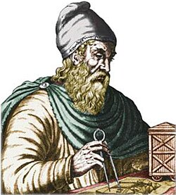
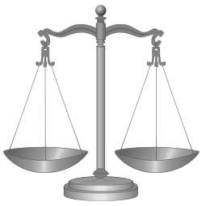

Matemática
A matemática é a ciência do raciocínio lógico e abstrato, que estuda através dos números, quantidades, medidas, espaços, estruturas, variações e estatísticas. Um trabalho matemático consiste em procurar por padrões, formular conjecturas e, por meio de deduções rigorosas a partir de axiomas e definições, estabelecer novos resultados. A matemática desenvolveu-se principalmente na Mesopotâmia, no Egito, na Grécia, na Índia e no Oriente Médio. A partir da Renascença o desenvolvimento da matemática intensificou-se na Europa, quando novas descobertas científicas levaram a um crescimento acelerado que dura até os dias de hoje.
Registros arqueológicos mostram que a matemática sempre foi parte da atividade humana. Ela evoluiu a partir de contagens, medições, cálculos e do estudo sistemático de formas geométricas e movimentos de objetos físicos. Raciocínios mais abstratos que envolvem argumentação lógica surgiram com os matemáticos gregos aproximadamente em 300 a.C., notadamente com a obra Os Elementos de Euclides. A necessidade de maior rigor foi percebida e estabelecida por volta do século XIX.

Artigo destacado
A expressão paridade do zero refere-se ao fato de o número zero ser considerado um número par. Em outras palavras, sua paridade — a qualidade de um número inteiro ser par ou ímpar — é par.

Você sabia?
- Que os pitagóricos consideravam os números apenas como plurais e não classificavam o 1 como número, mas sim como a origem de todos os números?
- Que o efeito Droste, nomeado após a empresa holandesa Droste fundada em 1890, já havia sido antecipada no século XIV em um tríptico de Giotto di Bondone?
- Que a descoberta do teorema de Descartes na geometria se deu a partir de cartas enviadas à princesa Isabel do Palatinado?